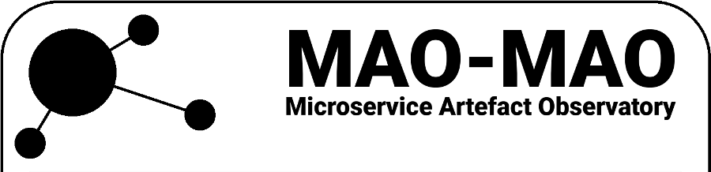

About:
MAO-MAO is an informal collaborative effort by researchers to develop and operate a research infrastructure to assess digital software artefacts representing microservices.
We gather statistics across various repositories (Docker, Maven, Helm, Lambda), aggregate and replicate all information, and run statistical analysis tasks for the
actual research work. MAO-MAO is currently in phase 2 as of 2019. This website serves primarily as overview about the activities with links to more interesting activities.
Try the demo instance of a developer-oriented artefact dashboard:
MAO dashboard (navigate to Docker Hub to get metrics)
As of November 2019, we have the MAO Orchestrator running in an etcd-coordinated federation with two instances in CH and AR.
Misc:
- Diving into the Helm ecosystems: From charts to metrics, Service Prototyping Lab Blog, January 2019
- Grafana dashboard on docker-compose consistency, regularly broken - sorry
- Insights into AWS SAR, Service Prototyping Lab Blog, May 2019
- Quality analysis of dapps: Just like cloud apps?, Service Prototyping Lab Blog, July 2019
- Quality analysis of DApps and other artefacts related to smart contracts in blockchains, Service Prototyping Research Slides, August 2019
- Introducing the Docker Compose Validator, Service Prototyping Lab Blog, October 2019
- Presenting the MAO Orchestrator, Service Prototyping Lab Blog, November 2019
- Docker image checks: Quality, security, up-to-dateness, layers and inheritance, Service Prototyping Lab Blog, November 2019
- Microservices in Numbers: Diagnostic Docker Deep Dive (Online Tutorial at CLOSER 2020), Service Prototyping Lab Blog, April 2020
Collaborators:
- Josef Spillner and Panagiotis Gkikopoulos, Service Prototyping Lab, Zurich University of Applied Sciences, Switzerland; with contributions by Oleksii Serhiienko, Ilham Qasse and Ali Daghighi
- Davide Taibi, Tampere University, Finland
- Maciej Malawski, AGH University of Science and Technology, Poland
- Pedro García López, Universitat Rovira i Virgili, Spain
- Sebastian Werner, ISI, TU Berlin, Germany
- Martin Garriga, Faculty of Informatics, University of Comahue, Argentina
- Cristian Mateos, ISISTAN Research Institute, CONICET, UNICEN, Argentina
- Kyriakos Kritikos, FORTH, Greece
- Tobias Brunner, VSHN AG, Switzerland
- Kleanthis Thramboulidis, University of Patras, Greece -- Cyber-Physical Microservices
Please join us if you want to participate in developing, operating or exploring the research infrastructure. You can
find out about our activities in the version log, and you can contact us by
sending an e-mail.